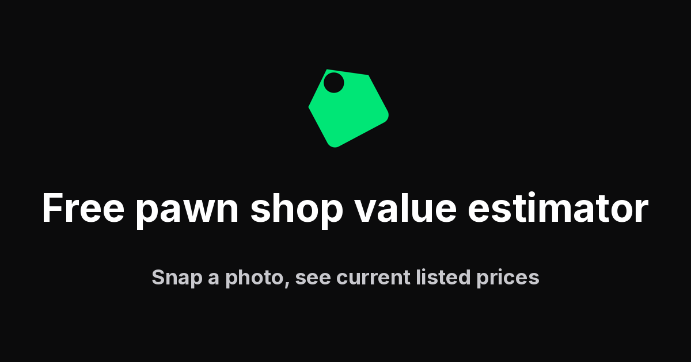

A free pawn shop value estimator is only useful if you feed it the right number. That number is not what you paid, not what it would cost new, and not what it is insured for. It is what your item would realistically resell for today. A pawnbroker works back from that figure, so the best thing you can do before you walk in is know it too.
Investopedia's explainer on how pawnshops make money says shops typically lend 25% to 60% of an item's projected resale value. The National Pawnbrokers Association has quoted loans from as little as 15% up to 60%. Selling outright usually gets a little more than a loan. Every shop sets its own offer, but all of those figures hang off the same base: resale value.
That is where a photo scan comes in. Scan the item, read the estimated sale, then put that figure into a free pawn shop value estimator to see what a fair offer range looks like.  How Much Is It Worth: Scanner does the scan on iPhone, and there is one free scan on the website.
How Much Is It Worth: Scanner does the scan on iPhone, and there is one free scan on the website.
Here is the order that works.
The estimator is a planning tool, not a quote. Only the shop can make an offer.
A pawnbroker is asking one question: if you do not come back, what can I sell this for, how fast, and what will it cost me to get there? Everything follows from that.
Want to try it? Start your free 3-day trial in the iPhone app at https://apps.apple.com/app/id6832980231. You get one free scan on the website at https://howmuchisitworth.today/pawn-shop-value-estimator. On Android? Check https://howmuchisitworth.today/ for the Android release.
A pawn loan gets you cash the same day and lets you keep the item if you repay the loan plus interest and fees on time. It is usually the lowest amount. Selling to the shop also pays the same day and usually gets a bit more than a loan, but the item is gone. Selling it yourself gets closest to full resale, minus fees and postage, but it takes days or weeks of photos, listings, and messages.
Pawn interest and fees are set by state law and vary a lot. Ask for the total repayment amount and the deadline in writing before you sign.
What they do pay fairly for: tools, working game consoles, recent phones and laptops, gold by weight, musical instruments, and well-known watches.
Clean the item gently, charge it, and bring every accessory, cable, and box you have. Remove your accounts and activation locks from phones, tablets, and laptops. Bring photo ID, since most states require pawn shops to record who they lend to and buy from. Get quotes from two or three shops. If an offer is well under a fair range, show them the listings on your phone. It does not always work, but it often moves the number.
A scan is not a certified appraisal or an offer to buy. It is the number you need so you are not negotiating blind.
The app is free to download. Start your free 3-day trial to scan in the app, or use one free scan on the website.
If you want to use a free pawn shop value estimator with a real resale figure, start at https://howmuchisitworth.today/pawn-shop-value-estimator, or download the app and Start your free 3-day trial.
I also wrote a Google Docs walkthrough of the same photo method: How Much Is It Worth: Scanner.